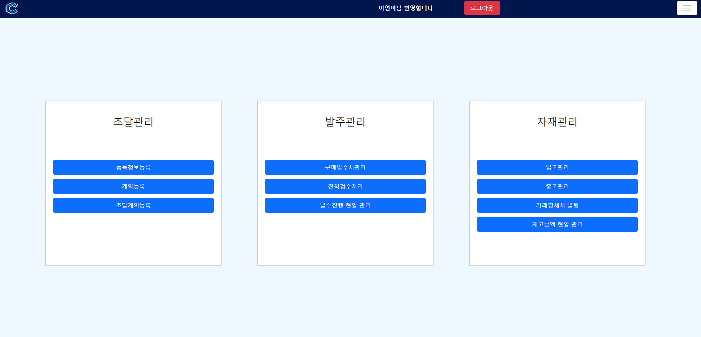
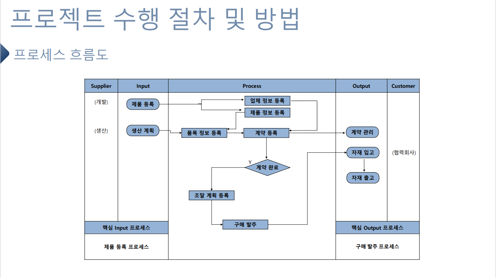
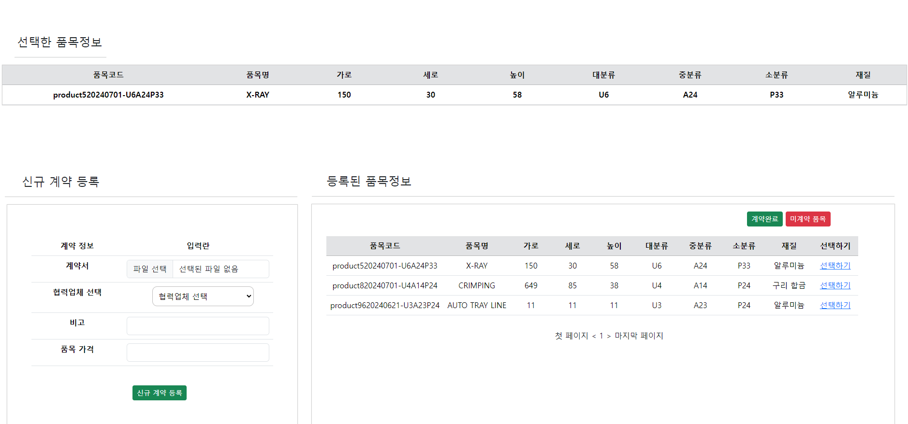
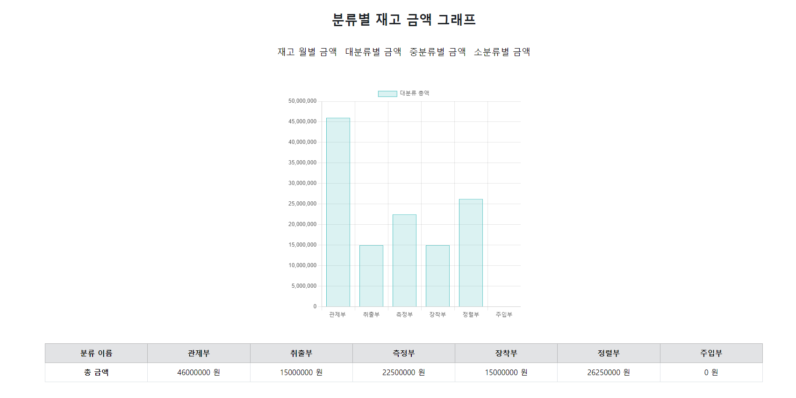
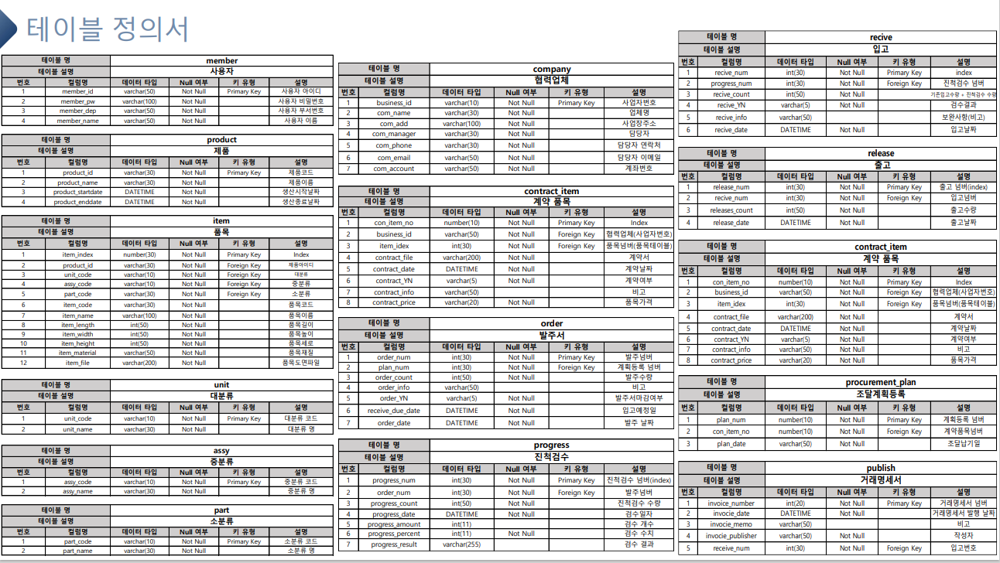

구매조달 시스템
기업의 구매·조달 과정을 하나의 시스템으로 묶은 프로젝트입니다. 제품을 등록하면서 생산계획을 함께 잡고, 품목과 업체를 연결해 계약을 맺은 뒤 발주부터 출고까지 상태를 넘겨가며 처리합니다. 계정 권한에 따라 접근할 수 있는 기능을 나눴습니다.

업무 흐름
각 단계를 통과해야 다음 단계로 넘어갑니다
- 제품 · 생산계획 제품명 중복 확인 후 등록
- 품목 · 업체 제품에 딸린 품목 세부정보 입력
- 계약 계약서 업로드로 확정
- 조달계획 생산계획보다 앞선 날짜는 차단
- 발주 수량과 특이사항 입력
- 진척검수 여러 차례로 나눠 진행 가능
- 입고 · 출고 출고 시 재고 수량 즉시 반영
화면




구현한 기능
제품 · 업체 등록 계정
- 여러 제품을 등록하고 제품별 생산계획을 함께 입력합니다.
- 제품명 등록 시 중복 확인을 걸어 같은 이름이 두 번 들어가지 않게 했습니다.
- 거래할 업체를 직접 등록합니다.
조달 · 물류 계정
- 제품에 속한 품목의 세부정보를 입력해 품목을 등록합니다.
- 등록된 품목과 업체를 묶고 계약서를 올려 계약을 확정합니다.
- 계약된 품목의 조달계획을 세웁니다. 제품 생산계획보다 앞선 날짜는 입력되지 않도록 막았습니다.
- 계획이 잡힌 품목만 목록에 불러와 수량과 특이사항을 입력해 발주합니다.
- 입고 전 진척검수로 발주 품목이 제대로 왔는지 오프라인 확인 후 체크합니다. 검수는 여러 차례로 나눠 진행할 수 있습니다.
- 발주 진행 현황 화면에서 단계별로 진행 중인 품목 수를 그래프로 봅니다.
- 검수까지 끝난 품목은 입고 처리하고, 출고가 일어나면 재고 목록의 수량 컬럼에 곧바로 반영됩니다.
- 재고 금액 현황에서 대·중·소 분류별 금액을 확인합니다.
마스터 계정
- 계정별로 나뉜 기능을 한곳에서 통합해 사용합니다.
배포
교육원 내부 서버에 상시 실행
테스트를 마친 프로젝트를 jar로 빌드하고, PuTTY로 서버 PC에 접속해 DB를 생성했습니다. FileZilla로 jar를 전송한 뒤 백그라운드 실행 명령으로 띄워 계속 돌아가도록 했습니다.